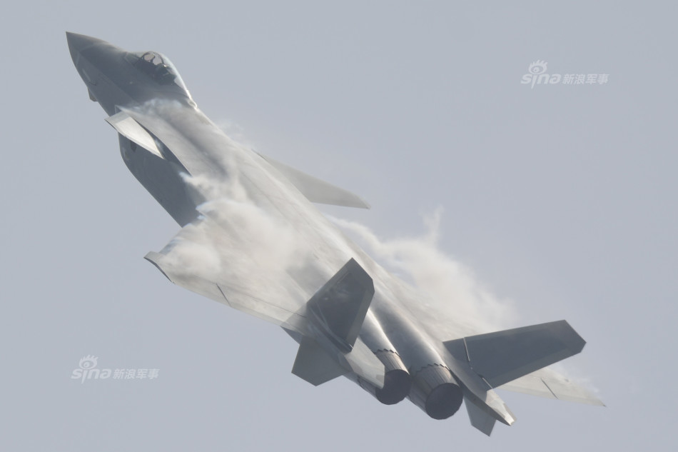
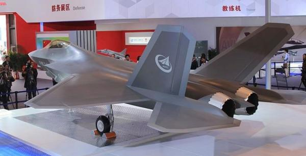
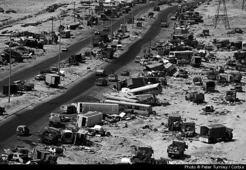
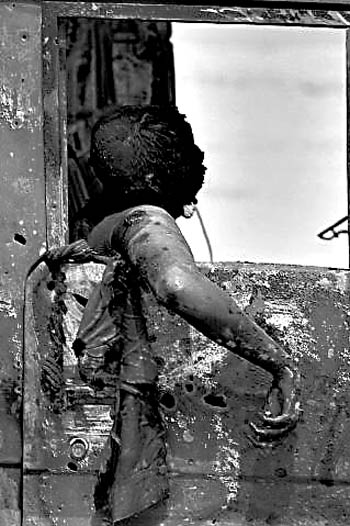
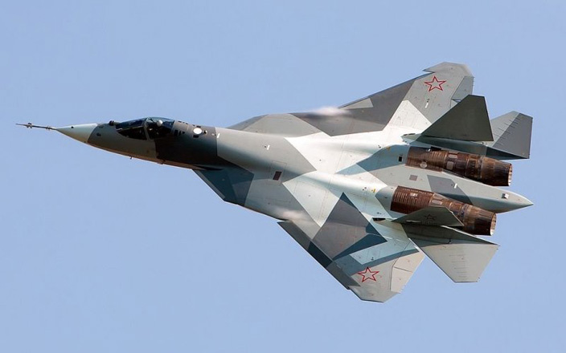

美国《防务新闻》网站12月27日刊载美国空军协会主席文章，代表多名空军将领强烈呼吁保留F-35战斗机，以维持对潜在对手的技术压制。
此前美国候选总统特朗普在推特上表示了对于彻底失控的F-35计划的厌恶，并且声称要用F-18来代替F-35。
特朗普的推特，要么让洛马给F-35降价，要么就用F-18超级大黄蜂战斗机
此次文章的作者美国空军协会主席，四星上将拉里·斯宾塞从06年起一直是决定美国国防政策和预算计划的关键人物之一
四星上将拉里·斯宾塞从1971年起就在美国空军中服役，2015年退役。服役长达44年。现今仍然是美国空军协会主席，在文章中斯宾塞大力呼吁需要足够数量的F-35战斗机替代现有的老化机队，他宣称F-35的生死存亡将是美国国防安全的关键。
出现在这个时期的文章显然有对特朗普削减F-35项目回应的意思，那么这位空军老将到底提出些什么理由呢
斯宾塞回顾，当他作为空军预算主任的时候目睹了F-22的停产，计划中更为便宜产量更大的F-35作为补充成为了美国国家安全战略的关键因素。作为世界上最大规模的空军，美国空军需要足够数量的F-35来维护和平稳定，来保卫自身的安全环境。适合于全球部署的F-35需要足够的规模来维持训练轮换和参与世界各地的冲突，并且保证取胜。

对于这种自信，成飞表示怀疑
斯宾塞将美军现有的机队描述为一堆挂着车牌勉强上路的古董车，现有的战斗机都是“老年人”。对于潜在的对手不再具有明确的技术差距压制，而F-35则是保持这种差距，以威慑对手不敢挑起战争的关键。

对前半句沈飞表示赞同，对于后半句表示怀疑并且扔给了你一架FC-31的2.0版本
而F-35与F-22以及B-21组合以传感器为核心引导射击的“云战斗”模式将成为21世纪的新的战斗模式，斯宾塞说“没有一个正常的头脑会去想反对它”。斯宾塞确信这将提供强大的常规威慑并且压倒性的击败任何对手。
美国空军退役中将Dave Deptula
另一位退役中将Dave Deptula曾经作为美军“沙漠风暴行动”空中战役的策划者、阿富汗战争、伊拉克战争中空袭的计划设计者。他宣称：“现在对于F-35加大投资推进进度的需求越发清晰，没有制空权就不能进行军事行动。谁如果怀疑这一结论，就应当想想萨达姆的部队1991年从科威特逃离的时候，那条‘死亡公路’的样子。”

伊科80高速公路，在入侵科威特的伊拉克军队撤退时遭到的美军的全方位打击，全军崩溃伤亡惨重

被抛弃在高速公路上的的车辆和阵亡人员
斯宾塞呼吁：“我们现在需要这些飞机，需要有足够数量的人来做这些工作。事实上，我们的敌人正在迅速的缩小着过去几十年间存在的技术差距，这不仅仅是对我们国家利益存在威胁，这也是自朝鲜战争初期以来，对我们的飞行员，舰员，士兵和海军陆战队员的生命前所未有的威胁。
作为空军协会主席，我深感担忧，经过26年的不断冲突，美国空军现在运营的是空军历史上最古老的机队。空军无法维持现在对大气，空间，和网络的主导地位，过时的系统和技术导致运作的成本增加。而他们的战斗力对于现代飞机正在下降。”
斯宾塞称，唯一的解决方案就是用F-35全面取代已经老化的F-15，F-16，A-10。现行削减F-35产量的预算计划将让美国空军无法承受风险，没有足够规模的F-35就等同于美国空军放弃了现有的技术优势，这不足以面对未来的安全挑战。“我们没有第二次机会！”
现在放慢生产速度和采购承诺换取未来的预算的噱头也是斯宾塞不可接受的，他认为等待新一代飞机是“无法维持这个地球上最伟大的国家的国防的”。这是现有美军唯一还在生产的五代机，面对中俄设计中或者已有的多款五代机，F-35在国防的重要性上无与伦比。“我们的敌人从没在等待！”所有的美军都依靠制空权来完成任务，赢得战争。没有足够的第五代战斗机在未来战场的制空权，美国的儿女会付出生命的代价。我们必须让他们保持信心。F-35是最好的解决方案。

苏霍伊摩拳擦掌表示确实没有在等待